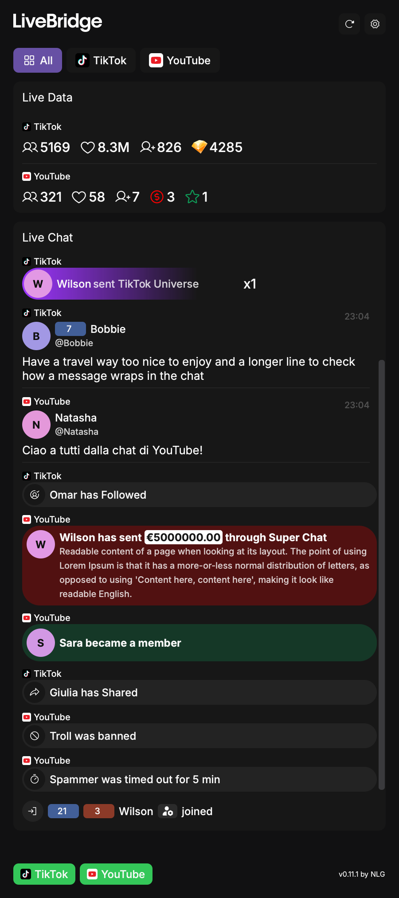
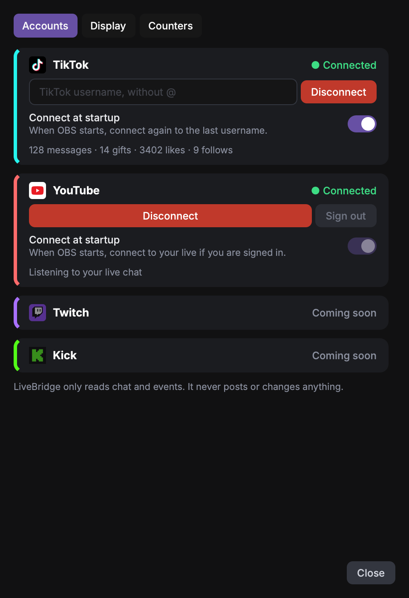

LiveBridge
One private timeline of chat, events and gifts for TikTok LIVE and YouTube Live, as docks inside OBS Studio.

What it does
- Shows chat, gifts, follows, shares, Super Chats and members in a single list, with the platform's own pictures and stickers.
- Live counters per platform: viewers, likes, new followers or subscribers, gifts, Super Chats, members.
- Separate docks for gifts and events, an events area above the chat, and an activity line under it.
- Works with TikTok LIVE and YouTube Live. Twitch and Kick are planned.
Private by design
LiveBridge has no server and no account. It runs entirely on your computer, inside OBS. The small helper service it starts listens only on 127.0.0.1, so nothing else on your network can reach it. We do not collect, receive or sell any data. Read the Privacy Policy.
Connecting YouTube
In Settings > Accounts, press Connect and sign in with Google in your browser. LiveBridge asks for one permission only: read-only access to your YouTube account (youtube.readonly), used to read your own live chat and your channel counters. It never posts, deletes or changes anything. You can disconnect at any time from the same screen, which also revokes the permission at Google.
Connecting TikTok
Type your TikTok username and press Connect. No password is needed: LiveBridge reads the same public data as a viewer of your live.
